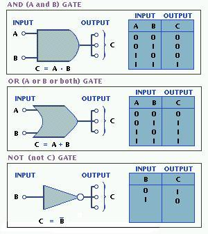

There are three types of simple gates: AND, OR and NOT. Any logic circuit can be made from a combination of these three gates.
Each LC has its own combination of inputs and outputs, after which they are named. Boolean logic is simple: the output is true only if the inputs match the LC. For example, in an AND lc, the output is true or 1, only if the inputs are both true or 1. "True" means 1 and "false" means 0. The chart above shows the written form of the LC, and next to the pictures the charts show every combination of input and the resulting output for each lc.